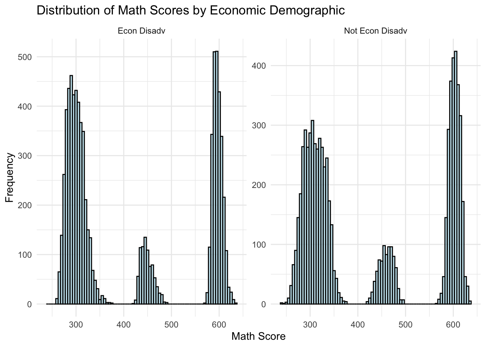
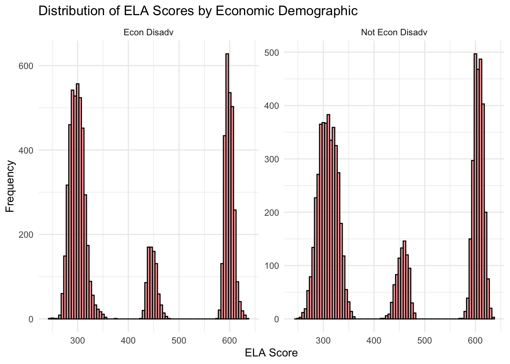
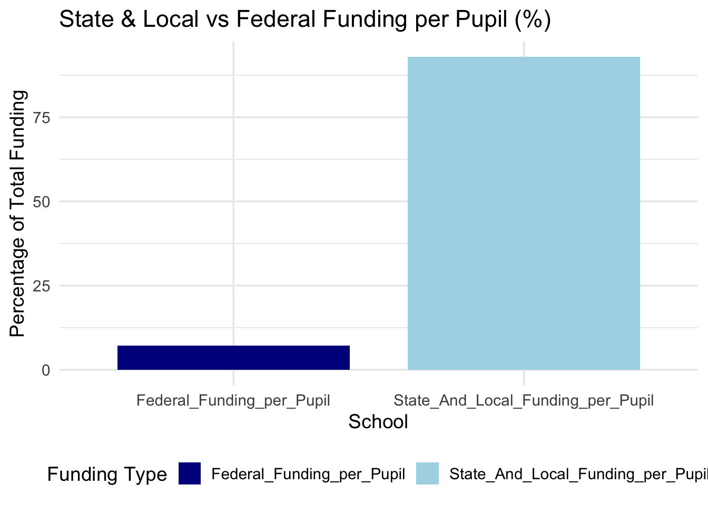
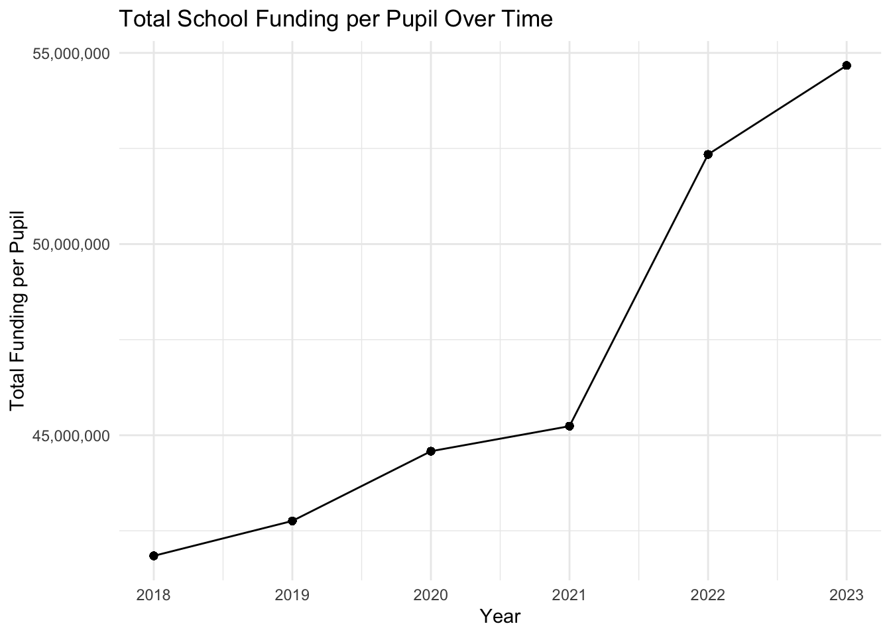
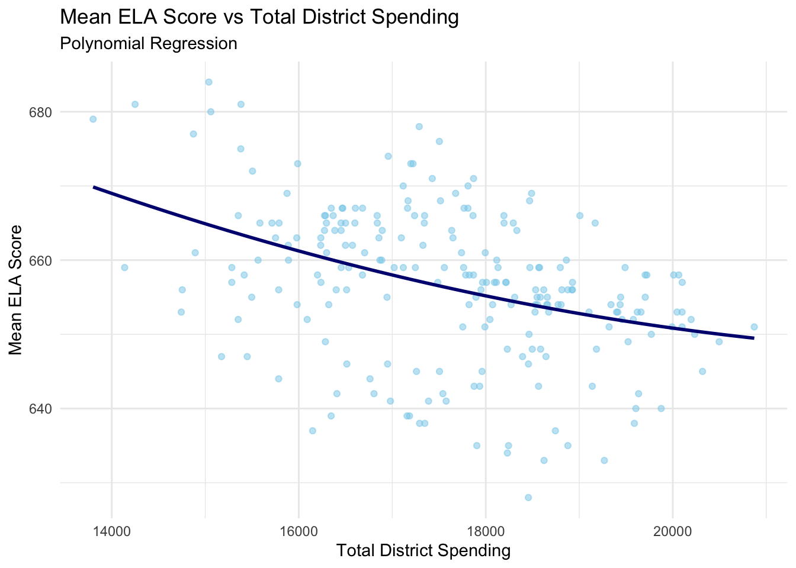

New York State spent 29,873 dollars per pupil on K-12 education in 2022, more than any other state in the nation and almost double the national average of 15,633 dollars per pupil.1 New York City Public Schools are the largest public school system in the United States. The system serves over 1.1 million students in more than 1,800 schools.2
Overarching Question: What factors are impacting overall academic performance in New York City’s public high schools?
Within this overarching question, I will explore the following sub-questions surrounding funding and spending: - How does city-wide and district-wide per-pupil spending relate to academic performance?
Does spending on certain purposes or functions correlate with higher academic performance?
Are school funding and spending proportionate to the number of students enrolled? Are there certain schools that are more likely to be successful in obtaining sources of funding? Do charter schools receive more funding and how are their funds spent?
NYC School Codes
A New York City public school’s school code is a six-digit number that identifies the school: - First two digits: Represent the school district
Third character: Indicates the borough where the school is located
Final three digits: Unique within the borough
The borough codes are:
M: Manhattan
X: Bronx
R: Staten Island
K: Brooklyn
Q: Queens
Foundation Aid
New York follows the public school funding formula — known as “Foundation Aid”. The goal is to ensure adequate funding for all school districts. Broadly speaking, the Foundation Aid formula multiplies the number of students in a district by the amount of funding needed in that district. The formula estimates the total current-year enrollment and assigns heigher weights to students with disabilities and students enrolled in special education programs. Districts with higher enrollment or more pupils in poverty would see higher Foundation Aid allocations. While, lower poverty districts would see lower Foundation Aid, but not below $500 per pupil.3
The ECON Status in the data set is marked by the percentage of students who are economically disadvantaged. New York uses reduced-price lunch eligibility as a basis for measuring student poverty. First implemented in 2007, Foundation Aid uses decades-old data to calculate district needs, like relying on figures from the 2000 Census to measure student poverty. Other factors that impact district spending, including the number of students living in temporary housing, don’t weigh into the current formula at all. 4
Data Sources
Academic Performance
InfoHub Data From the InfoHub site, I am loading the following data files:
GRAD_RATES
DEMOGRAPHICS
REGENTS
REGENTS_CS
Code
# Function to Get Data Files from NYCED URLget_nycps_file <-function(fname, sheet){ BASE_URL <-"https://infohub.nyced.org/docs/default-source/default-document-library/" fname_ext <-paste0(fname, ".xlsx")if(!file.exists(fname_ext)){ FILE_URL <-paste0(BASE_URL, fname_ext)download.file(FILE_URL, destfile = fname_ext) }as.data.frame(read_excel(fname_ext, sheet = sheet))}GRAD_RATES <-get_nycps_file("2023-graduation-rates-public-school", "All")DEMOGRAPHICS <-get_nycps_file("demographic-snapshot-2019-20-to-2023-24-public", "School")REGENTS <-get_nycps_file("2014-15-to-2022-23-nyc-regents-overall-and-by-category---public", "All Students")
To clean the data from, I am converting characters to the numeric data type, replacing ‘s’ with NAs, and calculating averages for graduation rates.
Code
# Regents & Grad Rates# Replace 's' and 'na' with NA for all columns in both datasetsREGENTS <- REGENTS |>mutate(across(where(is.character), ~na_if(na_if(., 's'), 'na')))REGENTS <- REGENTS |>mutate(across(c(`Mean Score`, `Number Scoring Below 65`, `Percent Scoring Below 65`, `Number Scoring 65 or Above`, `Percent Scoring 65 or Above`,`Number Scoring 80 or Above`, `Percent Scoring 80 or Above`,`Number meeting CUNY proficiency requirmenets`, `Percent meeting CUNY proficiency requirmenets`), ~as.numeric(.)))REGENTS <- REGENTS |>rename(DBN =`School DBN`)GRAD_RATES <- GRAD_RATES |>mutate(across(where(is.character), ~na_if(na_if(., 's'), 'na')))GRAD_RATES <- GRAD_RATES |>mutate(across(c(`# Grads`, `% Grads`, `# Total Regents`, `% Total Regents of Cohort`, `% Total Regents of Grads`,`# Advanced Regents`, `% Advanced Regents of Cohort`,`% Advanced Regents of Grads`, `# Regents without Advanced`,`% Regents without Advanced of Cohort`, `% Regents without Advanced of Grads`,`# Local`, `% Local of Cohort`, `% Local of Grads`, `# Still Enrolled`,`% Still Enrolled`, `# Dropout`, `% Dropout`), ~as.numeric(.)))# Calculate the averages for the relevant columnsgrad_rates_avg <- GRAD_RATES |>group_by(DBN, `Cohort Year`) |>summarize( # Group by school and calculate the average for relevant columnsavg_total_cohort =mean(`# Total Cohort`, na.rm =TRUE),avg_grads =mean(`# Grads`, na.rm =TRUE),avg_pct_grads =mean(`% Grads`, na.rm =TRUE),avg_total_regents =mean(`# Total Regents`, na.rm =TRUE),avg_pct_regents_cohort =mean(`% Total Regents of Cohort`, na.rm =TRUE),avg_pct_regents_grads =mean(`% Total Regents of Grads`, na.rm =TRUE),avg_advanced_regents =mean(`# Advanced Regents`, na.rm =TRUE),avg_pct_advanced_regents_cohort =mean(`% Advanced Regents of Cohort`, na.rm =TRUE),avg_pct_advanced_regents_grads =mean(`% Advanced Regents of Grads`, na.rm =TRUE),avg_regents_without_advanced =mean(`# Regents without Advanced`, na.rm =TRUE),avg_pct_regents_without_advanced_cohort =mean(`% Regents without Advanced of Cohort`, na.rm =TRUE),avg_pct_regents_without_advanced_grads =mean(`% Regents without Advanced of Grads`, na.rm =TRUE),avg_local =mean(`# Local`, na.rm =TRUE),avg_pct_local_cohort =mean(`% Local of Cohort`, na.rm =TRUE),avg_pct_local_grads =mean(`% Local of Grads`, na.rm =TRUE),avg_still_enrolled =mean(`# Still Enrolled`, na.rm =TRUE),avg_pct_still_enrolled =mean(`% Still Enrolled`, na.rm =TRUE),avg_dropout =mean(`# Dropout`, na.rm =TRUE),avg_pct_dropout =mean(`% Dropout`, na.rm =TRUE) )
City of New York Data
MATH_06_23_ALL
ELA_06_23_ALL
ECON_MATH_ELA_13_23
Here I’ve created a function to pull exam result data from the City of New York.
Code
# Function to Get City of New York Data Files from cityofnewyork URLget_cony_file <-function(fname, zname, FILE_URL) {if(!file.exists(fname)){if(!file.exists(zname)){ download.file(FILE_URL, destfile = zname) } td <-tempdir() zip_contents <-unzip(zname, exdir = td) file_path <-file.path(td, fname) }as.data.frame(read.csv(file_path))}
Below, I use the function to download data for ELA scores for 2006-2012 and 2013-2019, ELA scores with Economic status for 2013-2017, ELA scores on a district level for 2006-2011 and 2013-2018.
Code
# define URL and zip file nameELA_URL_2006 <-"https://data.cityofnewyork.us/api/views/9uqq-k6t8/files/6cb21873-4c19-42ab-aa31-13573b47ed45?download=true&filename=2006-2012%20ELA%20Test%20Results.zip"ELA_2006 <-"2006-2012_ELA_Test_Results.zip"# zip folder name# there is no Economic data file in the zip for 2006-2012ELA_2006_12_ALL <-get_cony_file("2006-2011_English_Language_Arts__ELA__Test_Results_by_Grade_-_School_level_-_All_Students.csv", ELA_2006, ELA_URL_2006)# ELA 2013-2019ELA_URL_2013_19 <-"https://data.cityofnewyork.us/api/views/iebs-5yhr/files/a6ff1ea4-4895-4372-a2d6-bbd0b17e89a4?download=true&filename=2013-2019%20ELA%20Test%20Results.zip"ELA_2013_19 <-"2013-2019_ELA_Test_Results.zip"# zip folder nameELA_2013_17_ECON <-get_cony_file("2013-2017_School_ELA_Results_-_Economic.csv", ELA_2013_19, ELA_URL_2013_19)district_ELA_1318 <-get_cony_file("2013-2018_District_ELA_Results.csv", ELA_2013_19, ELA_URL_2013_19)district_ELA_0611 <-get_cony_file("2006-2011_English_Language_Arts__ELA__Test_Results_by_Grade_-_District_-_All_Students.csv", ELA_2006, ELA_URL_2006)
Here, I define a function for ELA scores from 2013-2023. ELA 2013-2023 ALL
Code
# ELA 2013-2023 Functionget_ela_file <-function(fname, zname, sheet, FILE_URL){if(!file.exists(fname)){if(!file.exists(zname)){ download.file(FILE_URL, destfile = zname, mode ="wb") } td <-tempdir() zip_contents <-unzip(zname, exdir = td) file_path <-file.path(td, fname) }as.data.frame(read_excel(file_path, sheet = sheet))}# increase timeout time for zip downloadoptions(timeout =1000)ELA_URL_2013_23 <-"https://data.cityofnewyork.us/api/views/iebs-5yhr/files/33712362-a710-4640-a740-f6dc2c8ac991?download=true&filename=2013-2023%20ELA%20Test%20Results%20(Excel%20files).zip"ELA_2013_23 <-"2013-2023_ELA_Test_Results__Excel_files_.zip"# zip folder nameELA_2013_23_ALL <-get_ela_file("school-ela-results-2013-2023-(public).xlsx", ELA_2013_23, "All", ELA_URL_2013_23)
Next, I’m renaming the columns of ELA_2006_2012_ALL so that the column names are consistent across the ELA score data sets. This will help with binding the datasets and my analysis later on.
Additionally, I am ensuring that columns such as the number, percent, and mean are numeric instead of characters. This will introduce NA where the value is ‘s’. After this, I can bind the ELA 2006-2012 and 2013-2023 data sets together.
Code
ELA_2013_23_ALL <- ELA_2013_23_ALL |>mutate(across(.cols =starts_with('Num') |starts_with('Pct') |starts_with('Mean'), .fns =~as.numeric(.), .names ='{.col}' )) # introduces NA where value was "s" ELA_2006_12_ALL <- ELA_2006_12_ALL |>mutate(`School Name`=NA)ELA_2006_23_ALL <-bind_rows( ELA_2006_12_ALL, ELA_2013_23_ALL)
Below, I am loading in the Math 2006-2012, Math 2013-2023, and district level Math 2013-2023 data.
To clean the math data, like with the ELA data, I am renaming the columns to ensure consistency across the data sets. I am also binding the Math 2006-2012 and 2013-2023 data sets together and converting to the appropriate data types.
Code
# Bind 2006-2012 with 2013-2023# MathMATH_2006_12_ALL <- MATH_2006_12_ALL |>mutate(`School Name`=NA) # add column to match 2013-23 dfMATH_2013_23_ALL <- MATH_2013_23_ALL |>rename(`Grade`=`Grade`, `Demographic`=`Category`, `Number.Tested`=`Number Tested`,`Mean.Scale.Score`=`Mean Scale Score`,`Num.Level.1`=`# Level 1`,`Pct.Level.1`=`% Level 1`,`Num.Level.2`=`# Level 2`,`Pct.Level.2`=`% Level 2`,`Num.Level.3`=`# Level 3`,`Pct.Level.3`=`% Level 3`,`Num.Level.4`=`# Level 4`,`Pct.Level.4`=`% Level 4`,`Num.Level.3.and.4`=`# Level 3+4`,`Pct.Level.3.and.4`=`% Level 3+4` )MATH_2006_23_ALL <-bind_rows( MATH_2006_12_ALL, MATH_2013_23_ALL) # remember School Name is NA from 2006-12# convert character columns to numericMATH_2006_23_ALL <- MATH_2006_23_ALL |>mutate(across(.cols =starts_with('Num') |starts_with('Pct') |starts_with('Mean'), .fns =~as.numeric(.), .names ='{.col}' ))
Looking through the ELA and Math datasets for all students, I noticed that the Mean.Scale.Score for rows where Grade is “All Grades” is NA. However, we can find the Mean.Scale.Score for “All Grades” manually by calculating the average of the Mean.Scale.Score for each DBN and Year.
Code
# Calculate the averages for the relevant columns (for Math and ELA)# For MATH (Calculating means by DBN and Year)MATH_06_23_ALL_avg <- MATH_2006_23_ALL |>filter(Grade !='All Grades') |>group_by(DBN, Year) |>summarise(Pct.Level.1 =mean(`Pct.Level.1`, na.rm =TRUE),Pct.Level.2 =mean(`Pct.Level.2`, na.rm =TRUE),Pct.Level.3 =mean(`Pct.Level.3`, na.rm =TRUE),Mean.Scale.Score =mean(`Mean.Scale.Score`, na.rm =TRUE),Number.Tested =sum(`Number.Tested`, na.rm =TRUE),.groups ='drop' )# Add the "All Grades" row for MathMATH_06_23_ALL_with_avg <-bind_rows(MATH_2006_23_ALL, MATH_06_23_ALL_avg) |>mutate(Grade =if_else(Grade =="All Grades", "All Grades", Grade))# Replace NA values in the "All Grades" row with the computed averagesMATH_06_23_ALL <- MATH_06_23_ALL_with_avg |>mutate(Pct.Level.1 =ifelse(is.na(Pct.Level.1) & Grade =="All Grades", mean(Pct.Level.1, na.rm =TRUE), Pct.Level.1),Pct.Level.2 =ifelse(is.na(Pct.Level.2) & Grade =="All Grades", mean(Pct.Level.2, na.rm =TRUE), Pct.Level.2),Pct.Level.3 =ifelse(is.na(Pct.Level.3) & Grade =="All Grades", mean(Pct.Level.3, na.rm =TRUE), Pct.Level.3),Mean.Scale.Score =ifelse(is.na(Mean.Scale.Score) & Grade =="All Grades", mean(Mean.Scale.Score, na.rm =TRUE), Mean.Scale.Score),Number.Tested =ifelse(is.na(Number.Tested) & Grade =="All Grades", sum(Number.Tested, na.rm =TRUE), Number.Tested) )# For ELA (Calculating means by DBN and Year)ELA_06_23_ALL_avg <- ELA_2006_23_ALL |>filter(Grade !='All Grades') |>group_by(DBN, Year) |>summarise(Pct.Level.1 =mean(`Pct.Level.1`, na.rm =TRUE),Pct.Level.2 =mean(`Pct.Level.2`, na.rm =TRUE),Pct.Level.3 =mean(`Pct.Level.3`, na.rm =TRUE),Mean.Scale.Score =mean(`Mean.Scale.Score`, na.rm =TRUE),Number.Tested =sum(`Number.Tested`, na.rm =TRUE),.groups ='drop' )# Add the "All Grades" row for ELAELA_06_23_ALL_with_avg <-bind_rows(ELA_2006_23_ALL, ELA_06_23_ALL_avg) |>mutate(Grade =if_else(Grade =="All Grades", "All Grades", Grade))# Replace NA values in the "All Grades" row with the computed averages for ELAELA_06_23_ALL<- ELA_06_23_ALL_with_avg |>mutate(Pct.Level.1 =ifelse(is.na(Pct.Level.1) & Grade =="All Grades", mean(Pct.Level.1, na.rm =TRUE), Pct.Level.1),Pct.Level.2 =ifelse(is.na(Pct.Level.2) & Grade =="All Grades", mean(Pct.Level.2, na.rm =TRUE), Pct.Level.2),Pct.Level.3 =ifelse(is.na(Pct.Level.3) & Grade =="All Grades", mean(Pct.Level.3, na.rm =TRUE), Pct.Level.3),Mean.Scale.Score =ifelse(is.na(Mean.Scale.Score) & Grade =="All Grades", mean(Mean.Scale.Score, na.rm =TRUE), Mean.Scale.Score),Number.Tested =ifelse(is.na(Number.Tested) & Grade =="All Grades", sum(Number.Tested, na.rm =TRUE), Number.Tested) )MATH_06_23_ALL <- MATH_06_23_ALL |>filter(`Grade`=="All Grades")ELA_06_23_ALL <- ELA_06_23_ALL |>filter(`Grade`=="All Grades")
For the MLA and ELA scores broken down by Economic Status, again, I am downloading the data and renaming the columns to ensure consistency across the data sets. I am also joining the Math and ELA data sets together and converting the columns to the appropriate data types.
Code
ELA_2013_23_ECON <-get_ela_file("school-ela-results-2013-2023-(public).xlsx", ELA_2013_23, "Econ Status", ELA_URL_2013_23)MATH_2013_23_ECON <-get_math1323_file("04_school-math-results-2013-2023-(public).xlsx", MATH_2013_23, "Econ Status", MATH_URL_2013_23)ELA_2013_23_ECON <- ELA_2013_23_ECON |>rename(`Demographic`=`Category`, `Number.Tested`=`Number Tested`,`Mean.Scale.Score`=`Mean Scale Score`,`Num.Level.1`=`# Level 1`,`Pct.Level.1`=`% Level 1`,`Num.Level.2`=`# Level 2`,`Pct.Level.2`=`% Level 2`,`Num.Level.3`=`# Level 3`,`Pct.Level.3`=`% Level 3`,`Num.Level.4`=`# Level 4`,`Pct.Level.4`=`% Level 4`,`Num.Level.3.and.4`=`# Level 3+4`,`Pct.Level.3.and.4`=`% Level 3+4` ) MATH_2013_23_ECON <- MATH_2013_23_ECON |>rename(`Demographic`=`Category`, `Number.Tested`=`Number Tested`,`Mean.Scale.Score`=`Mean Scale Score`,`Num.Level.1`=`# Level 1`,`Pct.Level.1`=`% Level 1`,`Num.Level.2`=`# Level 2`,`Pct.Level.2`=`% Level 2`,`Num.Level.3`=`# Level 3`,`Pct.Level.3`=`% Level 3`,`Num.Level.4`=`# Level 4`,`Pct.Level.4`=`% Level 4`,`Num.Level.3.and.4`=`# Level 3+4`,`Pct.Level.3.and.4`=`% Level 3+4` ) # Full Join Math and ELA results with Economic DemographicsMATH_ELA_2013_23_ECON <- MATH_2013_23_ECON |>full_join(ELA_2013_23_ECON, by =c("DBN", "Year", "Grade", "Demographic", "School Name"), suffix =c(".math", ".ela"))# Convert character to numeric data typeMATH_ELA_2013_23_ECON <- MATH_ELA_2013_23_ECON |>mutate(across(.cols =starts_with('Num') |starts_with('Pct') |starts_with('Mean'), .fns =~as.numeric(.), .names ='{.col}' )) # introduces NA where value was "s" ECON_MATH_ELA_13_23 <- MATH_ELA_2013_23_ECON |>filter(`Grade`=="All Grades")
ELA and MATH Test Score Distribution By Student Economic Demographic
Code
# Faceted Math Score Plot by Demographicggplot(ECON_MATH_ELA_13_23, aes(x =`Mean.Scale.Score.math`)) +geom_histogram(binwidth =5, fill ="lightblue", color ="black", alpha =0.7) +labs(title ="Distribution of Math Scores by Economic Demographic", x ="Math Score", y ="Frequency") +theme_minimal() +facet_wrap(~ Demographic, scales ="free_y") # Facet by Demographic with independent y-axis scales

Code
ggplot(ECON_MATH_ELA_13_23, aes(x =`Mean.Scale.Score.ela`)) +geom_histogram(binwidth =5, fill ="lightcoral", color ="black", alpha =0.7) +labs(title ="Distribution of ELA Scores by Economic Demographic", x ="ELA Score", y ="Frequency") +theme_minimal() +facet_wrap(~ Demographic, scales ="free_y")

School Funding
School Funding Transparency Data
funding_C_201823
NYC publishes School Funding Transparency Data for 2017-2019.
Code
# Downloading School Funding Transparency Data 2017-2019get_201719_funds <-function(zname, fname, sheet){ BASE_URL <-"https://nycenet.edu/documents/NYS/" zname_ext <-paste0(zname, ".zip") FILE_URL <-paste0(BASE_URL, zname_ext)if(!file.exists(zname_ext)) {download.file(FILE_URL, destfile = zname_ext, mode ="wb") } td <-tempdir()unzip(zname_ext, exdir = td) xlsx_file <-file.path(td, paste0(fname, ".xlsx"))as.data.frame(read_excel(xlsx_file, sheet = sheet))if (!file.exists(xlsx_file)) {unzip(zname_ext, exdir = td) }# Read the specified sheet from the Excel file, skipping the first 5 rows because they are blank and setting the 6th row as the headeras.data.frame(read_excel(xlsx_file, sheet = sheet, skip =6))}# Downloading School Funding Transparency Data 2019-2023get_funding_file <-function(zname, fname, sheet){ BASE_URL <-"https://infohub.nyced.org/docs/default-source/default-document-library/" zname_ext <-paste0(zname, ".zip") FILE_URL <-paste0(BASE_URL, zname_ext)if(!file.exists(zname_ext)) {download.file(FILE_URL, destfile = zname_ext, mode ="wb") } td <-tempdir()unzip(zname_ext, exdir = td) xlsx_file <-file.path(td, paste0(fname, ".xlsx"))as.data.frame(read_excel(xlsx_file, sheet = sheet))if (!file.exists(xlsx_file)) {unzip(zname_ext, exdir = td) }# Read the specified sheet from the Excel file, skipping the first 5 rows because they are blank and setting the 6th row as the headeras.data.frame(read_excel(xlsx_file, sheet = sheet, skip =6))}# use functions to get data filesfunding_201718_C <-get_201719_funds("NewYorkCitySchoolTransparency201718", "NewYorkCitySchoolTransparency201718 A-E web", "Part-C")funding_201819_C <-get_201719_funds("NewYorkCitySchoolTransparency201819", "NewYorkCitySchoolTransparency201819 A-E web", "Part-C")funding_201920_C <-get_funding_file("newyorkcityschooltransparency201920", "NewYorkCitySchoolTransparency201920 A-E web", "Part C")funding_202021_C <-get_funding_file("newyorkcityschooltransparency202021", "NewYorkCitySchoolTransparency202021 A-E web", "Part C")funding_202122_C <-get_funding_file("newyorkcityschooltransparency202122", "NewYorkCitySchoolTransparency202122 A-E web", "Part C")funding_202223_C <-get_funding_file("newyorkcityschooltransparency202223", "NewYorkCitySchoolTransparency202223", "Part C")# combine into one dataset for Part Cfunding_C_201823 <-bind_rows( funding_201718_C |>mutate(Year =2018), funding_201819_C |>mutate(Year =2019), funding_201920_C |>mutate(Year =2020), funding_202021_C |>mutate(Year =2021), funding_202122_C |>mutate(Year =2022), funding_202223_C |>mutate(Year =2023),)funding_C_201823 <- funding_C_201823 |>rename(DBN =`Local School Code`)
Charter Schools Moving on to charter schools. Charter schools are publicly funded but operate independently. While the range of scores remains similar, charter schools tend to have lower median scores compared to district-run schools. While they need to meet certain performance goals, they receive less per-pupil funding than district schools, which can impact their ability to offer additional resources and support for students. To look at charter school performance, we will use the following datasets:
REGENTS_CS
ELA_2013_17_CS
MATH_2013_17_CS
All_CS_combined
Code
# list of charter schools: https://www.nysed.gov/charter-schools/charter-schools-directory cs_url <-"https://www.nysed.gov/charter-schools/charter-schools-directory"cs <-read_html("https://www.nysed.gov/charter-schools/charter-schools-directory")charter_schools <- cs |>html_elements(".rtecenter:nth-child(1)") charter_schools_text <- charter_schools |>html_text()charter_schools_df <-data.frame(school_name = charter_schools_text,stringsAsFactors =FALSE)REGENTS_CS <- REGENTS |>filter(str_detect(`School Name`, 'Charter'))
ELA and Math scores for Charter Schools is available through the City of New York. I will download the data and clean it up using the functions defined previously.
To clean the Charter School data, I will rename the columns to ensure consistency across the data sets. I will also convert the columns to the appropriate data types as we did with the other data sets.
Here, I combine the separate years of charter school data sets for ELA and Math. I then assign a Subject column to then combine Math and ELA scores for charter schools into one dataframe.
Code
ELA_2006_12_CS <- ELA_2006_12_CS |>mutate(`School.Name`=NA)ELA_combined <-rbind(ELA_2006_12_CS, ELA_2013_17_CS)# Combine the datasets into one for MathMATH_2006_12_CS <- MATH_2006_12_CS |>mutate(`School.Name`=NA)MATH_combined <-rbind(MATH_2006_12_CS, MATH_2013_17_CS)ELA_combined <- ELA_combined |>mutate(across(c(`Mean.Scale.Score`, `Num.Level.1`, `Pct.Level.1`, `Num.Level.2`, `Pct.Level.2`, `Num.Level.3`, `Pct.Level.3`, `Num.Level.4`, `Pct.Level.4`, `Num.Level.3.and.4`, `Pct.Level.3.and.4`), ~as.numeric(.)))MATH_combined <- MATH_combined |>mutate(across(c(`Mean.Scale.Score`, `Num.Level.1`, `Pct.Level.1`, `Num.Level.2`, `Pct.Level.2`, `Num.Level.3`, `Pct.Level.3`, `Num.Level.4`, `Pct.Level.4`, `Num.Level.3.and.4`, `Pct.Level.3.and.4`), ~as.numeric(.)))# For MATH (Calculating means by DBN and Year)MATH_combined_avg <- MATH_combined |>filter(Grade !='All Grades') |>group_by(DBN, Year) |>summarise(Pct.Level.1 =mean(`Pct.Level.1`, na.rm =TRUE),Pct.Level.2 =mean(`Pct.Level.2`, na.rm =TRUE),Pct.Level.3 =mean(`Pct.Level.3`, na.rm =TRUE),Mean.Scale.Score =mean(`Mean.Scale.Score`, na.rm =TRUE),Number.Tested =sum(`Number.Tested`, na.rm =TRUE),.groups ='drop' )# For ELA (Calculating means by DBN and Year)ELA_combined_avg <- ELA_combined |>filter(Grade !='All Grades') |>group_by(DBN, Year) |>summarise(Pct.Level.1 =mean(`Pct.Level.1`, na.rm =TRUE),Pct.Level.2 =mean(`Pct.Level.2`, na.rm =TRUE),Pct.Level.3 =mean(`Pct.Level.3`, na.rm =TRUE),Mean.Scale.Score =mean(`Mean.Scale.Score`, na.rm =TRUE),Number.Tested =sum(`Number.Tested`, na.rm =TRUE),.groups ='drop' )ELA_combined_avg$Subject <-"ELA"MATH_combined_avg$Subject <-"Math"CS_200617_data <-rbind(ELA_combined_avg, MATH_combined_avg) CS_200617_data$isCharterSchool <-"Yes"ELA_06_23_ALL_cs <- ELA_06_23_ALL_avg |>mutate(`Subject`="ELA", `isCharterSchool`="No")MATH_06_23_ALL_cs <- MATH_06_23_ALL_avg |>mutate(`Subject`="Math", `isCharterSchool`="No")All_CS_combined <-rbind(CS_200617_data, ELA_06_23_ALL_cs, MATH_06_23_ALL_cs)
School Expenditures
The NYC Public School site publishes School Based Expenditure Reports for the years 2017 and 2018. I will scrape the data from the site and combine the two years into one dataset.
expenditure_201718
expenditure_201617
Code
# Function to scrape funding data for a given yearscrape_exp_data <-function(year) { url <-paste0("https://www.nycenet.edu/offices/d_chanc_oper/budget/dbor/sber/FY", year, "/FY", year, "_District_Overview.aspx") h <-read_html(url) table <- h |>html_node('table') |>html_table() |>mutate(Year = year)colnames(table) <- table[2, ] # Set second row as the column names table <- table[-c(1, 2), ] # Remove the first two rows (header and the one before it)as.data.frame(table)}# Scrape data for 2016-2018# Citywide Summary for the School COunt and Title I Count# Per Capita Calculation for Dollars, Enrollment, Per Capitaexpenditure_201718 <-scrape_exp_data(2018)expenditure_201617 <-scrape_exp_data(2017)# Combine expenditure reportsexpenditure_201718 <- expenditure_201718 |>rename(`Year`=`2018`)expenditure_201617 <- expenditure_201617 |>rename(`Year`=`2017`)expenditure_201618 <-bind_rows(expenditure_201718, expenditure_201617)
District Specific Data
To perform district level analysis, I will use the following datasets:
district_MATH_2006_12
district_ELA_2006_12
district_spending_0412
The New York Fed website has school funding data by district and borough for 2004 - 2012. I will pair that with Math and ELA scores by district for 2006 - 2012 from the City of New York.
Overall, NYC has seen an increase in funding over the years. New York City Public Schools receive funding from three sources: State aid, local resources, and Federal aid. The majority of funding comes from State and Local sources. We can also see that Total Funding per Pupil has increased overtime
Code
funding_source_totals <- funding_C_201823 |>select(`School Name`, `DBN`, `Year`,State_And_Local_Funding_per_Pupil =`State & Local\r\nFunding per Pupil`, Federal_Funding_per_Pupil =`Federal Funding \r\nper Pupil`) |>pivot_longer(cols =c(State_And_Local_Funding_per_Pupil, Federal_Funding_per_Pupil),names_to ="Funding_Type",values_to ="Amount") |>group_by(`DBN`, `Year`) |>mutate(total_funding =sum(Amount, na.rm =TRUE), Percentage = Amount / total_funding *100 ) |>select(`DBN`,`School Name`, Funding_Type, Percentage)funding_source_avg <- funding_source_totals |>group_by(Funding_Type) |>summarise(mean_percentage =mean(Percentage, na.rm =TRUE)) |>ungroup()# Plotting the funding data sourceggplot(funding_source_avg, aes(x = Funding_Type, y = mean_percentage, fill = Funding_Type)) +geom_bar(stat ="identity", position ="stack", width = .8) +scale_fill_manual(values =c("State_And_Local_Funding_per_Pupil"="lightblue", "Federal_Funding_per_Pupil"="darkblue")) +labs(title ="State & Local vs Federal Funding per Pupil (%)",x ="School",y ="Percentage of Total Funding",fill ="Funding Type" ) +theme_minimal(base_size =14) +theme(legend.position ="bottom")# line plot of total school funding per pupil over timefunding_C_201823 |>filter(!is.na(`Total School Funding per Pupil`)) |>group_by(Year) |>mutate(`Total School Funding per Pupil per Year`=sum(`Total School Funding per Pupil`, na.rm =TRUE)) |>ggplot(aes(x = Year, y =`Total School Funding per Pupil per Year`)) +geom_line() +geom_point() +labs(title ="Total School Funding per Pupil Over Time", x ="Year", y ="Total Funding per Pupil") +scale_y_continuous(labels = scales::comma) +# Prevent scientific notation and add commastheme_minimal()


Fair Student Funding Fair Student Funding (FSF) makes up about two-thirds of most K-12 NYCPS school budgets. Other funding sources include federal funding streams, such as:
Title I: for high percentages of students from low-income families
Title III: for English Language Learners/Limited English Proficient students, special education funding for Individuals with Disabilities Education Act, or other targeted allocations for specific initiatives.
Charter schools and Mandated Individual Education Plan services for speech teachers, occupational therapists, and 1:1 professionals are funded separately. Which is why we have we do not see charter schools in our funding data.
Broadly speaking, FSF is the formula used to distribute funding to districts and is determined based on three key factors:
Number of Students Enrolled
Student Needs
a minimum funding amount of $500 per student
Student needs are “weighted” based on the cost of meeting a student’s educational need so that schools get more money for students with greater needs. This means that in districts with higher enrollment or more students living in poverty, Foundation Aid will be higher. Districts with higher overall incomes will see lower funding, but never below $500 per student. Determining and measuring student needs is a complex process. The NYC Department of Education uses a weighted formula to determine the needs of students.
Fair Student Funding Weights The NYC Department of Education shares details its method to determine the needs of students as such5: Academic Intervention:
Poverty for schools beginning before 4th grade.
Lower student achievement where incoming test scores predict academic need.
Over-Age Under-Credited ‘Over The Counter’ (OTC) status.
English Language Learner status, based on:
Students in English as a New Language (ENL) and Bilingual programs.
Students with interrupted formal education (SIFE).
Special Education, based on: - Students with special instruction through Individualized Education Programs (IEPs).
Special education periods mandated per week and the intensity of those services.
Students in Temporary Housing, based on:
Families reported living in Doubled Up, Shelter, Hotel/Motel, or Other Temporary Living Situation on the Housing Questionnaire.
High schools also have additional weights: - Career and Technical Education (CTE) Designated High Schools
Specialized Academic: including higher course/credit loads and AP courses.
Specialized Audition: performance audition or a portfolio review, Arts Endorsed Diploma
Transfer: re-engage students who have dropped out or are over-age and under-credited for their grade
Distribution of Total School Funding per Pupil
We can observe a long tail distribution of total school funding per pupil. The figure below demonstrates that some schools have significantly higher funding per pupil amounts compared to the majority of schools.
Code
ggplot(funding_C_201823, aes(x =`Total School Funding per Pupil`)) +geom_histogram(binwidth =1000, fill ="black", color ="lightblue", alpha =0.7) +labs(title ="Distribution of Total School Funding per Pupil", x ="Total School Funding per Pupil", y ="Frequency") +scale_x_continuous(labels = scales::comma_format()) +theme_minimal()
Schools with the Most Funding
Number one is Home Instruction, a District 75 school located in the Bronx. District 75 is a special education district that serves students with significant challenges. Home Instruction provides K-12 educational services for students who are unable to attend school due to orthopedic, non-orthopedic/medical, or psychiatric reasons. At number two, we see Hospital Schools, which is also a District 75 school. As the name suggests, it is a special program to meet the educational needs of hospitalized children. Passages Academy from the table below provides education, as well as counseling services, for court-involved students who are detained. P255Q is a District 75 school for students with Autism Spectrum Disorders.
These statistics align with the idea that schools with higher funding per pupil are those that serve students with greater needs. All of the top funded schools are a part of District 75, which provides specialized educational support for students with significant challenges, such as:6
Autism Spectrum Disorders
Significant cognitive delays
Emotional disabilities
Sensory impairments
Multiple disabilities
Code
avg_funding_per_school <- funding_C_201823 |>group_by(`School Name`) |>summarize(`Average Funding`=mean(`Total School Funding per Pupil`, na.rm =TRUE))|>arrange(desc(`Average Funding`)) top_funding_table <- avg_funding_per_school |>head(10) |>gt() |>tab_header(title ="Top 10 Schools with Highest Average Total Funding per Pupil" ) |>cols_label(`School Name`="School Name",`Average Funding`="Average Funding per Pupil" ) |>tab_style(style =cell_text(weight ="bold"),locations =cells_column_labels(columns =vars(`School Name`, `Average Funding`)) ) |>tab_style(style =cell_borders(sides ="bottom", weight =px(2)),locations =cells_body(columns =vars(`School Name`, `Average Funding`)) )top_funding_table
Top 10 Schools with Highest Average Total Funding per Pupil
School Name
Average Funding per Pupil
Home Instruction
247517.00
Hospital Schools
150815.82
P.S. R037
108642.19
The David Marquis School of the Arts
106155.43
Passages Academy
99331.72
P.S. Q255
94098.06
P.S. K771
93304.86
P.S. K231
91829.35
P.S. K396
91538.18
The Richard H. Hungerford School
91523.38
Funding Allocation
Classroom Teacher Salary Allocation
For most schools, the majority of their funding allocation is for classroom teachers.
Code
teacher_salary <- funding_C_201823 |>rename(Classroom_Teachers =`Classroom Teachers`) |>filter(!is.na(Classroom_Teachers)) |>group_by(Year) |>summarise(Mean_Classroom_Teachers =mean(Classroom_Teachers)) |>select(Year, Mean_Classroom_Teachers)ggplot(teacher_salary, aes(x = Year, y = Mean_Classroom_Teachers)) +geom_line(color ="royalblue", size =1) +geom_point(color ="royalblue", size =2) +labs(title ="Mean Total Allocation to Classroom Teacher Salary Across Schools", x ="Year", y ="Mean Total Allocation($)") +scale_y_continuous(labels = scales::comma) +# Format y-axis without scientific notationtheme_minimal()
Here we see that increasing funding for classroom teachers can boost student performance, but only up to a certain point.
Code
# Calculate percentage of each spending category relative to total fundingfunding_spending <- funding_C_201823 |>mutate(pct_classroom_teachers =`Classroom Teachers`/`Total Allocation by Purpose`*100,pct_all_other_salaries =`All Other Salaries`/`Total Allocation by Purpose`*100,pct_employee_benefits =`Employee Benefits`/`Total Allocation by Purpose`*100 )# Join Math and ELA dataMATH_ELA_06_23 <- MATH_06_23_ALL |>left_join(ELA_06_23_ALL, by =c("DBN", "Year"), suffix =c(".math", ".ela"))# Merge funding data with academic performance data funding_performance_df <- MATH_ELA_06_23 |>left_join(funding_spending, by =c("DBN", "Year"))# Select relevant columnsfunding_performance_select <- funding_performance_df |>select( DBN, Year,Classroom_Teachers =`Classroom Teachers`, All_Other_Salaries =`All Other Salaries`,Employee_Benefits =`Employee Benefits`,BOCES_Services =`BOCES Services`,All_Other =`All Other`,School_Administration =`School Administration`,Instructional_Media =`Instructional Media`,Pupil_Support_Services =`Pupil\r\nSupport\r\nServices`,State_Local_Funding =`State & Local Funding`,Federal_Funding =`Federal \r\nFunding`,Total_Funding_per_Pupil =`Total School Funding per Pupil`,Mean_Scale_Score_Math =`Mean.Scale.Score.math`, # Math performanceMean_Scale_Score_ELA =`Mean.Scale.Score.ela`# ELA performance )funding_performance_filterNA <- funding_performance_select |>drop_na(Classroom_Teachers, All_Other_Salaries, Employee_Benefits, BOCES_Services, All_Other, Mean_Scale_Score_Math, Mean_Scale_Score_ELA)# Function to compute and display the R-squared value for the polynomial modeladd_r_squared <-function(model) { rsq <-summary(model)$r.squaredreturn(paste("R^2: ", round(rsq, 3)))}# Scatter plot for Classroom_Teachers vs. Mean Scale Score (ELA) with polynomial regression and R² labelggplot(funding_performance_filterNA, aes(x = Classroom_Teachers, y = Mean_Scale_Score_ELA)) +geom_point() +geom_smooth(method ="lm", formula = y ~poly(x, 3), color ="blue", se =FALSE) +labs(title ="Classroom Teachers Funding vs. Mean Scale Score (ELA)", x ="Classroom Teachers Funding", y ="Mean Scale Score (ELA)") +scale_x_continuous(labels =comma_format()) +theme_minimal() +annotate("text", x =max(funding_performance_filterNA$Classroom_Teachers) *0.95, y =max(funding_performance_filterNA$Mean_Scale_Score_ELA) *0.95, label =add_r_squared(lm(Mean_Scale_Score_ELA ~poly(Classroom_Teachers, 3), data = funding_performance_filterNA)), color ="blue", size =3, hjust =1, vjust =1)# Scatter plot for Classroom_Teachers vs. Mean Scale Score (Math) with polynomial regression and R² labelggplot(funding_performance_filterNA, aes(x = Classroom_Teachers, y = Mean_Scale_Score_Math)) +geom_point() +geom_smooth(method ="lm", formula = y ~poly(x, 3), color ="blue", se =FALSE) +labs(title ="Classroom Teachers Funding vs. Mean Scale Score (Math)", x ="Classroom Teachers Funding", y ="Mean Scale Score (Math)") +scale_x_continuous(labels =comma_format()) +theme_minimal() +annotate("text", x =max(funding_performance_filterNA$Classroom_Teachers) *0.95, y =max(funding_performance_filterNA$Mean_Scale_Score_Math) *0.95, label =add_r_squared(lm(Mean_Scale_Score_Math ~poly(Classroom_Teachers, 3), data = funding_performance_filterNA)), color ="blue", size =3, hjust =1, vjust =1)
Funding Correlations
Looking at the correlation matrix, we can see the relationships between different funding sources and academic performance metrics. Total Funding per Pupil has weak negative correlations with performance scores, which could imply that schools with more funding per pupil do not necessarily have better performance outcomes. This does makes sense as more funding is actually allocated based student need determined by performance lags.
On the flip side, it seems that there are weak positive correlations between Classroom Teacher funding with Mean_Scale_Score_Math (0.155) and Mean_Scale_Score_ELA (0.133). Both Instructional_Media and Pupil_Support_Services also have weak correlations with both Mean_Scale_Score_Math and Mean_Scale_Score_ELA. The weak correlations between funding categories (Classroom Teachers, All Other Salaries, Employee Benefits, etc.) with Mean_Scale_Score_Math and Mean_Scale_Score_ELA suggests that funding allocations may not directly influence student performance in these areas. Rather than driving academic performance, funding is more so being used to bring equity to the education system.
Code
funding_spending <- funding_C_201823 |>mutate(pct_classroom_teachers =`Classroom Teachers`/`Total Allocation by Purpose`*100,pct_all_other_salaries =`All Other Salaries`/`Total Allocation by Purpose`*100,pct_employee_benefits =`Employee Benefits`/`Total Allocation by Purpose`*100 )# Join Math and ELA dataMATH_ELA_06_23 <- MATH_06_23_ALL |>left_join(ELA_06_23_ALL, by =c("DBN", "Year"), suffix =c(".math", ".ela"))# Merge funding data with academic performance data funding_performance_df <- MATH_ELA_06_23 |>left_join(funding_spending, by =c("DBN", "Year"))# Select relevant columnsfunding_performance_select <- funding_performance_df |>select( DBN, Year,Classroom_Teachers =`Classroom Teachers`, All_Other_Salaries =`All Other Salaries`,Employee_Benefits =`Employee Benefits`,BOCES_Services =`BOCES Services`,All_Other =`All Other`,School_Administration =`School Administration`,Instructional_Media =`Instructional Media`,Pupil_Support_Services =`Pupil\r\nSupport\r\nServices`,State_Local_Funding =`State & Local Funding`,Federal_Funding =`Federal \r\nFunding`,Total_Funding_per_Pupil =`Total School Funding per Pupil`,Mean_Scale_Score_Math =`Mean.Scale.Score.math`, # Math performanceMean_Scale_Score_ELA =`Mean.Scale.Score.ela`# ELA performance )funding_performance_filterNA <- funding_performance_select |>drop_na(Classroom_Teachers, All_Other_Salaries, Employee_Benefits, BOCES_Services, All_Other, Mean_Scale_Score_Math, Mean_Scale_Score_ELA)correlation_matrix <- funding_performance_filterNA |>select( Classroom_Teachers, All_Other_Salaries, Employee_Benefits, BOCES_Services, All_Other, School_Administration, Instructional_Media, Pupil_Support_Services, State_Local_Funding, Federal_Funding, Total_Funding_per_Pupil, Mean_Scale_Score_Math, Mean_Scale_Score_ELA ) |>cor(use ="complete.obs") correlation_matrix_melted <-melt(correlation_matrix)# Plot the correlation heatmapggplot(correlation_matrix_melted, aes(Var1, Var2, fill = value)) +geom_tile() +scale_fill_gradient2(low ="blue", high ="red", mid ="white", midpoint =0, limit =c(-1, 1)) +theme_minimal() +labs(title ="Correlation between Funding and Performance Metrics",x ="Variables",y ="Variables",fill ="Correlation") +theme(axis.text.x =element_text(angle =45, hjust =1))
Code
# Function to compute and display the R-squared value for the polynomial modeladd_r_squared <-function(model) { rsq <-summary(model)$r.squaredreturn(paste("R^2: ", round(rsq, 3)))}# Scatter plot for All_Other_Salaries vs. Mean Scale Score (ELA) with polynomial regression and R² labelggplot(funding_performance_filterNA, aes(x = All_Other_Salaries, y = Mean_Scale_Score_ELA)) +geom_point() +geom_smooth(method ="lm", formula = y ~poly(x, 3), color ="blue", se =FALSE) +labs(title ="All Other Salaries Funding vs. Mean Scale Score (ELA)", x ="All Other Salaries Funding", y ="Mean Scale Score (ELA)") +scale_x_continuous(labels =comma_format()) +theme_minimal() +annotate("text", x =max(funding_performance_filterNA$All_Other_Salaries) *0.95, # position on x-axis (slightly left from max)y =max(funding_performance_filterNA$Mean_Scale_Score_ELA) *0.95, # position on y-axis (slightly down from max)label =add_r_squared(lm(Mean_Scale_Score_ELA ~poly(All_Other_Salaries, 2), data = funding_performance_filterNA)), color ="blue", size =3, hjust =1, vjust =1)# Scatter plot for Employee_Benefits vs. Mean Scale Score (ELA) with polynomial regression and R² labelggplot(funding_performance_filterNA, aes(x = Employee_Benefits, y = Mean_Scale_Score_ELA)) +geom_point() +geom_smooth(method ="lm", formula = y ~poly(x, 3), color ="blue", se =FALSE) +labs(title ="Employee Benefits Funding vs. Mean Scale Score (ELA)", x ="Employee Benefits Funding", y ="Mean Scale Score (ELA)") +scale_x_continuous(labels =comma_format()) +theme_minimal() +annotate("text", x =max(funding_performance_filterNA$Employee_Benefits) *0.95, y =max(funding_performance_filterNA$Mean_Scale_Score_ELA) *0.95, label =add_r_squared(lm(Mean_Scale_Score_ELA ~poly(Employee_Benefits, 3), data = funding_performance_filterNA)), color ="blue", size =3, hjust =1, vjust =1)# Scatter plot for All_Other vs. Mean Scale Score (ELA) with polynomial regression and R² labelggplot(funding_performance_filterNA, aes(x = All_Other, y = Mean_Scale_Score_ELA)) +geom_point() +geom_smooth(method ="lm", formula = y ~poly(x, 3), color ="blue", se =FALSE) +labs(title ="All Other Funding vs. Mean Scale Score (ELA)", x ="All Other Funding", y ="Mean Scale Score (ELA)") +scale_x_continuous(labels =comma_format()) +theme_minimal() +annotate("text", x =max(funding_performance_filterNA$All_Other) *0.95, y =max(funding_performance_filterNA$Mean_Scale_Score_ELA) *0.95, label =add_r_squared(lm(Mean_Scale_Score_ELA ~poly(All_Other, 3), data = funding_performance_filterNA)), color ="blue", size =3, hjust =1, vjust =1)# Scatter plot for All_Other_Salaries vs. Mean Scale Score (Math) with polynomial regression and R² labelggplot(funding_performance_filterNA, aes(x = All_Other_Salaries, y = Mean_Scale_Score_Math)) +geom_point() +geom_smooth(method ="lm", formula = y ~poly(x, 3), color ="blue", se =FALSE) +labs(title ="All Other Salaries Funding vs. Mean Scale Score (Math)", x ="All Other Salaries Funding", y ="Mean Scale Score (Math)") +scale_x_continuous(labels =comma_format()) +theme_minimal() +annotate("text", x =max(funding_performance_filterNA$All_Other_Salaries) *0.95, y =max(funding_performance_filterNA$Mean_Scale_Score_Math) *0.95, label =add_r_squared(lm(Mean_Scale_Score_Math ~poly(All_Other_Salaries, 3), data = funding_performance_filterNA)), color ="blue", size =3, hjust =1, vjust =1)# Scatter plot for Employee_Benefits vs. Mean Scale Score (Math) with polynomial regression and R² labelggplot(funding_performance_filterNA, aes(x = Employee_Benefits, y = Mean_Scale_Score_Math)) +geom_point() +geom_smooth(method ="lm", formula = y ~poly(x, 3), color ="blue", se =FALSE) +labs(title ="Employee Benefits Funding vs. Mean Scale Score (Math)", x ="Employee Benefits Funding", y ="Mean Scale Score (Math)") +scale_x_continuous(labels =comma_format()) +theme_minimal() +annotate("text", x =max(funding_performance_filterNA$Employee_Benefits) *0.95, y =max(funding_performance_filterNA$Mean_Scale_Score_Math) *0.95, label =add_r_squared(lm(Mean_Scale_Score_Math ~poly(Employee_Benefits, 3), data = funding_performance_filterNA)), color ="blue", size =3, hjust =1, vjust =1)# Scatter plot for All_Other vs. Mean Scale Score (Math) with polynomial regression and R² labelggplot(funding_performance_filterNA, aes(x = All_Other, y = Mean_Scale_Score_Math)) +geom_point() +geom_smooth(method ="lm", formula = y ~poly(x, 3), color ="blue", se =FALSE) +labs(title ="All Other Funding vs. Mean Scale Score (Math)", x ="All Other Funding", y ="Mean Scale Score (Math)") +scale_x_continuous(labels =comma_format()) +theme_minimal() +annotate("text", x =max(funding_performance_filterNA$All_Other) *0.95, y =max(funding_performance_filterNA$Mean_Scale_Score_Math) *0.95, label =add_r_squared(lm(Mean_Scale_Score_Math ~poly(All_Other, 3), data = funding_performance_filterNA)), color ="blue", size =3, hjust =1, vjust =1)
Regents
In addition to Mean Scale Scores for Math and ELA, we can take a look at Regent exam scores. The Regents exams are standardized tests in New York State that are administered to high school students. These exams are used to measure student achievement and determine whether students have met the minimum requirements for graduation. The exams cover a range of subjects, including English, math, science, and social studies.
Code
# Split the REGENTS data by Regents Exam typeregents_split <- REGENTS |>group_by(DBN, Year, `Regents Exam`) |>summarise(total_tested =sum(`Total Tested`, na.rm =TRUE),mean_score =mean(`Mean Score`, na.rm =TRUE),number_below_65 =sum(`Number Scoring Below 65`, na.rm =TRUE),percent_below_65 =mean(`Percent Scoring Below 65`, na.rm =TRUE),number_65_or_above =sum(`Number Scoring 65 or Above`, na.rm =TRUE),percent_65_or_above =mean(`Percent Scoring 65 or Above`, na.rm =TRUE),number_80_or_above =sum(`Number Scoring 80 or Above`, na.rm =TRUE),percent_80_or_above =mean(`Percent Scoring 80 or Above`, na.rm =TRUE),number_cuny_proficiency =sum(`Number meeting CUNY proficiency requirmenets`, na.rm =TRUE),percent_cuny_proficiency =mean(`Percent meeting CUNY proficiency requirmenets`, na.rm =TRUE) ) |>ungroup()regents_wide <- regents_split |>pivot_wider(names_from =`Regents Exam`,values_from =c( total_tested, mean_score, number_below_65, percent_below_65, number_65_or_above, percent_65_or_above, number_80_or_above, percent_80_or_above, number_cuny_proficiency, percent_cuny_proficiency ) )# join regents with fundingregents_funding <- REGENTS |>filter(`Year`>=2018) |>left_join(funding_C_201823, by =c("DBN", "Year"))# Calculate correlation between Total Funding per Pupil and Mean Scoreregent_corr<-cor(regents_funding$`Total School Funding per Pupil`, regents_funding$`Mean Score`, use ="complete.obs")cat("Correlation between Total School Funding per Pupil and Mean Regent Score: \n ", regent_corr, "\n")
Correlation between Total School Funding per Pupil and Mean Regent Score:
-0.2325824
Code
ggplot(regents_funding, aes(x =`Total School Funding per Pupil`, y =`Mean Score`)) +geom_point(alpha =0.5) +labs(title ="Total Funding per Pupil vs Mean Regent Score",x ="Total Funding per Pupil",y ="Mean Regent Score") +theme_minimal()
Code
regent_corr<-cor(regents_funding$`Total School Funding per Pupil`, regents_funding$`Percent Scoring 65 or Above`, use ="complete.obs")cat("Correlation between Total School Funding per Pupil and Percent Scoring 65 or Above: \n", regent_corr, "\n")
Correlation between Total School Funding per Pupil and Percent Scoring 65 or Above:
-0.1992125
Code
ggplot(regents_funding, aes(x =`Total School Funding per Pupil`, y =`Percent Scoring 65 or Above`)) +geom_point(alpha =0.5) +labs(title ="Total School Funding per Pupil vs Percent Scoring Above 65 on Regents",x ="Total School Funding per Pupil",y ="Percent Scoring 65 or Above") +theme_minimal()
In the polynomial regression between Total School Funding per Pupil and Mean Regent Score, about 6.7% of the variation in Mean Score can be explained by Total School Funding per Pupil. This suggests that there are likely other factors influencing mean scores, as funding per pupil is not a strong predictor of the mean exam score in this model.
Code
# drop nas and run modelregents_funding_na <- regents_funding_clean |>drop_na(`Mean_Score`, `Total_School_Funding_per_Pupil`)model_poly_1 <-lm(`Mean_Score`~poly(`Total_School_Funding_per_Pupil`, 2), data = regents_funding_na)summary(model_poly_1)
Call:
lm(formula = Mean_Score ~ poly(Total_School_Funding_per_Pupil,
2), data = regents_funding_na)
Residuals:
Min 1Q Median 3Q Max
-71.639 -8.885 -0.351 8.478 38.867
Coefficients:
Estimate Std. Error t value Pr(>|t|)
(Intercept) 63.793 0.112 569.66 <2e-16
poly(Total_School_Funding_per_Pupil, 2)1 -320.394 12.207 -26.25 <2e-16
poly(Total_School_Funding_per_Pupil, 2)2 156.890 12.207 12.85 <2e-16
(Intercept) ***
poly(Total_School_Funding_per_Pupil, 2)1 ***
poly(Total_School_Funding_per_Pupil, 2)2 ***
---
Signif. codes: 0 '***' 0.001 '**' 0.01 '*' 0.05 '.' 0.1 ' ' 1
Residual standard error: 12.21 on 11880 degrees of freedom
Multiple R-squared: 0.06707, Adjusted R-squared: 0.06691
F-statistic: 427 on 2 and 11880 DF, p-value: < 2.2e-16
Code
ggplot(regents_funding_na, aes(x =`Total_School_Funding_per_Pupil`, y =`Mean_Score`)) +geom_point(color ="skyblue", alpha =0.5) +# Scatter pointsgeom_smooth(method ="lm", formula = y ~poly(x, 2), color ="navy", se =FALSE) +# Polynomial linelabs(title ="Mean Regent Score vs Total School Funding per Pupil",subtitle ="Polynomial Regression",x ="Total School Funding per Pupil",y ="Mean Regent Score" ) +theme_minimal()
Charter Schools
Do charter schools receive more funding and how are their funds spent? Moving on to charter schools. Charter schools are publicly funded but operate independently. Charter school funding averages 30% less than traditional public schools. Charter schools in major cities received, on average, $7,147 less per pupil during the 2019-20 school year, a new study finds.7 While they need to meet certain performance goals, they receive less per-pupil funding than district schools, which can impact their ability to offer additional resources and support for students. The range of scores remains similar to that ofnon charter schools, however, charter schools have a lower median score in comparison to district-run schools.
Code
# Calculate the average Max Scale Score for charter and non-charter schools for each subjectperformance_comparison <- All_CS_combined |>group_by(Subject, isCharterSchool) |>summarise(Average_Score =mean(Mean.Scale.Score, na.rm =TRUE),SD_Score =sd(Mean.Scale.Score, na.rm =TRUE),N =n(), .groups ='drop' )# Plot mean scale score by charter school statusggplot(performance_comparison, aes(x = isCharterSchool, y = Average_Score, fill = isCharterSchool)) +geom_bar(stat ="identity", position ="dodge") +facet_wrap(~ Subject) +# Separate by Subject (ELA and Math)labs(title ="Comparison of Mean Scale Score by Charter School Status",x ="Charter School Status",y ="Average Mean Scale Score" ) +theme_minimal() +scale_fill_manual(values =c("No"="lightblue", "Yes"="lightcoral"))
Code
All_CS_combined_clean <- All_CS_combined |>filter(is.finite(Mean.Scale.Score))# Boxplots for Charter School statusggplot(All_CS_combined, aes(x = isCharterSchool, y = Mean.Scale.Score, fill = isCharterSchool)) +geom_boxplot() +facet_wrap(~ Subject) +labs(title ="Comparison of Mean Scale Score by Charter School Status",x ="Charter School Status",y ="Mean Scale Score" ) +theme_minimal() +scale_fill_manual(values =c("No"="lightblue", "Yes"="palegreen3")) +theme(axis.text.x =element_text(angle =45, hjust =1) )
Are there certain schools that are more likely to be successful in obtaining sources of funding?
As we saw above, the majority of public school funding comes from state and local sources with local resources filling the gap between State aid and the cost of instruction. The data we are using in this analysis, however, does not distinguish between State and Local funding. As we can see from the Rockefeller Institute’s report, 54% of education revenue was local.8 This is a significant portion of funding that is not distinguished in this analysis.
Spending
How does city-wide, district-wide, and school-wide per-pupil spending relate to academic performance?
In the code below, I start by merging two datasets on district and year: district_spending_0412 (school district spending data) with two academic performance datasets: district_ELA_2006_12 and district_MATH_2006_12. I filter out the years 2004 and 2005 are excluded due to incomplete academic performance data for these years. Joining with the nyc shapefile, we can map the spending data by district.
Code
district_spending_ELA<- district_spending_0412 |>left_join(district_ELA_2006_12, by =c("csd"="District", "year"="Year")) |>filter(year !=2004& year !=2005) # filter out 2004-2005district_spending_MATH <- district_spending_0412 |>left_join(district_MATH_2006_12, by =c("csd"="District", "year"="Year")) |>filter(year !=2004& year !=2005) # filter out 2004-2005funding_map_df <- nyc_sf |>left_join(district_spending_0412, by =c("SchoolDist"="csd")) grand_total_df <- funding_map_df[, c("year", "SchoolDist", "grand_total_csd", "grand_total_boro", "grand_total_nyc")]funding_map_df$grand_total_nyc <-as.numeric(funding_map_df$grand_total_nyc)funding_map_gif <- funding_map_df |>ggplot() +geom_sf(aes(fill = grand_total_csd), color ="white", size =0.2) +scale_fill_gradient(low ="lightblue", high ="darkblue", name ="Total NYC Funding") +labs(title ="Funding by District in NYC (Total)", caption ="Data Source: NYC School Spending" ) +theme_minimal() +theme(legend.position ="bottom", legend.key.width =unit(4, "lines"), legend.text =element_text(size =10), legend.title =element_text(size =12), plot.margin =margin(10, 10, 10, 10) ) +geom_sf_text(data = nyc_sf, aes(geometry = geometry, label = SchoolDist), color ="white", size =2) +transition_time(as.integer(year)) +labs(title ="Funding by District in NYC (Total) - Year: {frame_time}")# save_animation(funding_map_gif, "fundingmap.gif")
To get a look at some more recent years after, we can use the district expenditure data for 2017 and 2018.
Code
expenditure_201718_filtered <- expenditure_201618 |>filter(str_starts(`By District`, "District")) |>mutate(District =str_extract(`By District`, "\\d{2}"),District =as.numeric(`District`),`Dollar_Amt`=str_extract(`Dollars`, "(?<=\\$).*"),Dollar_Amt =gsub(",", "", Dollar_Amt), Dollar_Amt =as.numeric(Dollar_Amt), Per_Capita_Amt =str_extract(`Per Capita`, "(?<=\\$).*"),Per_Capita_Amt =gsub(",", "", Per_Capita_Amt), Per_Capita_Amt =as.numeric(Per_Capita_Amt), )# Join with Map Shapefile dataexpenditure_map <- nyc_sf |>left_join(expenditure_201718_filtered, by =c("SchoolDist"="District")) expenditure_map_gif <- expenditure_map |>ggplot() +geom_sf(aes(fill =`Dollar_Amt`), color ="white", size =0.2) +scale_fill_gradient(low ="lightyellow", high ="darkgreen", name ="Total Expenditure ($)") +labs(title ="Expenditure by District in NYC (Total)", caption ="Data Source: NYC School Expenditures" ) +theme_minimal() +theme(legend.position ="bottom",legend.key.width =unit(4, "lines"), legend.text =element_text(size =10), legend.title =element_text(size =12), plot.margin =margin(10, 10, 10, 10) ) +geom_sf_text(data = nyc_sf, aes(geometry = geometry, label = SchoolDist), color ="white", size =2) +transition_time(as.integer(Year)) +labs(title ="Expenditure by District in NYC (Total) - Year: {frame_time}")# expenditure_map_gif# anim_save(filename="expendituremap.gif", expenditure_map_gif)
When performing a linear regression between Mean Scale Score and grand_total_csd, there is a negative relationship between total school funding per pupil and mean scale scores. The model explains only 15.56% of the variation in the mean scale scores for math. However, the relationship between funding and performance is highly statistically significant (p-value < 0.001), meaning that the association between total funding and academic performance is unlikely to be due to chance.
Code
# polynomial regression model: Mean Score math as a function of spendingmodel_lm_m <-lm(Mean.Scale.Score ~ grand_total_csd, data = district_spending_MATH)summary(model_lm_m)
Call:
lm(formula = Mean.Scale.Score ~ grand_total_csd, data = district_spending_MATH)
Residuals:
Min 1Q Median 3Q Max
-36.028 -7.436 1.819 8.449 28.288
Coefficients:
Estimate Std. Error t value Pr(>|t|)
(Intercept) 7.306e+02 1.147e+01 63.706 < 2e-16 ***
grand_total_csd -3.318e-03 6.494e-04 -5.109 6.96e-07 ***
---
Signif. codes: 0 '***' 0.001 '**' 0.01 '*' 0.05 '.' 0.1 ' ' 1
Residual standard error: 13.94 on 222 degrees of freedom
Multiple R-squared: 0.1052, Adjusted R-squared: 0.1012
F-statistic: 26.1 on 1 and 222 DF, p-value: 6.964e-07
Likewise, for ELA the linear regression results below indicates a small negative relationship between grand_total_csd and Mean Scale Score. The coefficient for grand_total_csd (total funding) is negative, suggesting that higher funding is associated with slightly lower mean scale scores. 15% of the variation in mean ELA scale scores can be explained by total district spending.
Code
# polynomial regression model: Mean Score ela as a function of spendingmodel_lm_e <-lm(Mean.Scale.Score ~ grand_total_csd, data = district_spending_ELA)summary(model_lm_e)
Call:
lm(formula = Mean.Scale.Score ~ grand_total_csd, data = district_spending_ELA)
Residuals:
Min 1Q Median 3Q Max
-26.295 -4.656 1.417 5.594 20.428
Coefficients:
Estimate Std. Error t value Pr(>|t|)
(Intercept) 7.061e+02 7.747e+00 91.136 < 2e-16 ***
grand_total_csd -2.806e-03 4.387e-04 -6.395 9.35e-10 ***
---
Signif. codes: 0 '***' 0.001 '**' 0.01 '*' 0.05 '.' 0.1 ' ' 1
Residual standard error: 9.417 on 222 degrees of freedom
Multiple R-squared: 0.1556, Adjusted R-squared: 0.1518
F-statistic: 40.9 on 1 and 222 DF, p-value: 9.346e-10
Code
ggplot(district_spending_MATH, aes(x =`grand_total_csd`, y =`Mean.Scale.Score`)) +geom_point(color ="skyblue", alpha =0.5) +# Scatter pointsgeom_smooth(method ="lm", formula = y ~poly(x, 2), color ="navy", se =FALSE) +# Polynomial linelabs(title ="Mean Math Score vs Total District Spending",subtitle ="Polynomial Regression",x ="TotalTotal District Spending",y ="Mean Math Score" ) +theme_minimal()ggplot(district_spending_ELA, aes(x =`grand_total_csd`, y =`Mean.Scale.Score`)) +geom_point(color ="skyblue", alpha =0.5) +# Scatter pointsgeom_smooth(method ="lm", formula = y ~poly(x, 2), color ="navy", se =FALSE) +# Polynomial linelabs(title ="Mean ELA Score vs Total District Spending",subtitle ="Polynomial Regression",x ="Total District Spending",y ="Mean ELA Score" ) +theme_minimal()

Does spending on certain purposes or functions correlate with higher academic performance? The highest-spending districts in New York City were not necessarily the highest-performing.
In most districts, classroom spending is around 50% of total district funding. Classroom spending is the largest category of spending, followed by support services, leadership, ancillary services, and building services.
Code
district_spending_pct <- district_spending_0412 |>mutate(classroom_csd_pct = classroom_csd/grand_total_csd,support_csd_pct = support_csd/grand_total_csd, leadership_csd_pct = leadership_csd/grand_total_csd,ancillary_csd_pct = ancillary_csd/grand_total_csd,building_csd_pct = building_csd/grand_total_csd)# Scatter plot of classroom spending vs. total district spendingggplot(district_spending_pct, aes(x = csd, y = classroom_csd_pct)) +geom_point(color ="skyblue", alpha =0.5) +geom_smooth(method ="lm", color ="navy", se =FALSE) +labs(title ="Classroom Spending vs District",x ="Total District Spending",y ="Classroom Spending (%)" ) +theme_minimal()
Classroom Spending vs. Mean Scale Score Given the sizeable portion of classroom spending,let’s take a look at its relation to student’s academic performance. The scatter plot below shows the relationship between classroom spending and mean scale scores for ELA and Math. The blue line represents a non-linear smoothing of the data, showing a slight negative trend between classroom spending and mean scale scores.
Code
ggplot(district_spending_ELA, aes(x = classroom_csd, y = Mean.Scale.Score)) +geom_point() +geom_smooth(method ="loess", color ="blue", se =FALSE) +# Non-linear smoothinglabs(title ="Classroom Spending vs. Mean Scale Score (ELA)",x ="Classroom Spending (CSD)",y ="Mean Scale Score (ELA)" ) +theme_minimal()ggplot(district_spending_MATH, aes(x = classroom_csd, y = Mean.Scale.Score)) +geom_point() +geom_smooth(method ="loess", color ="red", se =FALSE) +# Non-linear smoothinglabs(title ="Classroom Spending vs. Mean Scale Score (Math)",x ="Classroom Spending (CSD)",y ="Mean Scale Score (Math)" ) +theme_minimal()
Conclusion: A Call for Change
Throughout this analysis, it seems that the relationship between funding and academic performance tends to reflect the funding formula. Essentially, more funding is indeed distributed to schools that require more resources. That is, if we consider that schools with lower-performing students need more financial resources. As such, funding aimed at bringing equity to the school system creates a complex dynamic. While funding is essential for providing resources and support to students, it is not the only factor that determines academic success and seems to be reactive.
First implemented in 2007, Foundation Aid uses decades-old data to calculate district needs. It relies on figures from the 2000 Census to measure student poverty. The Rockefeller Institute has called for “significant change” to the school funding formula. The recommendations include modifying how the formula accounts for inflation, changing and updating the data used to determine student poverty, and establishing more nuanced calculations for funding based on students with disabilities, among other changes. 9
For future analysis, it would be interesting to get the weights that the NYC Department of Education uses to calculate the funding formula. I could sese how funding is allocated and do a bootstrap/Monte Carlo analysis on various weights to see how it impacts a school’s funding allocation.